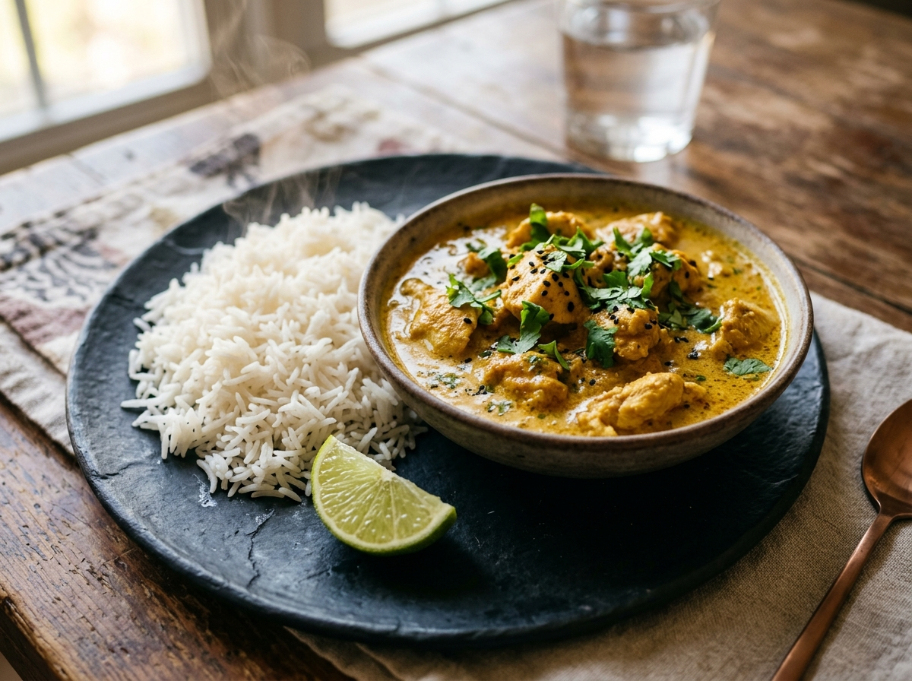
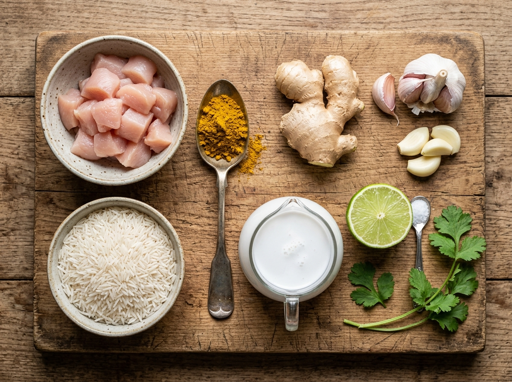

🍛 Pollo al Curry con Riso Basmati
Bocconcini succosi speziati al curry con vellutata crema al cocco (o yogurt) e riso basmati a chicchi sgranati per assorbimento.

Bocconcini succosi speziati al curry con vellutata crema al cocco (o yogurt) e riso basmati a chicchi sgranati per assorbimento.
Ammollo con cambio quotidiano dell'acqua per 5 giorni, calcolatore del sale grosso al 7% del peso e procedura di salamoia.
Bocconcini teneri avvolti da una salsa vellutata e profumata, serviti con riso basmati per assorbimento.

Taglia il pollo a bocconcini regolari di circa 2.5 cm. Metti in ciotola con un pizzico di sale e mezzo cucchiaio di curry. Mescola bene e lascia a temperatura ambiente mentre prepari gli aromi.
Sciacqua il riso basmati fino ad acqua limpida (rimuove l'amido). Mettilo nel pentolino con l'acqua fredda salata indicata (rapporto 1:1.5). Porta a bollore, poi copri ermeticamente, fiamma al minimo per 11 minuti senza mai aprire né mescolare. Spegni e fai riposare 5 min prima di sgranarlo con la forchetta.
Scalda l'olio in un wok o padella. Fai appassire la cipolla tritata per 3 minuti. Aggiungi aglio e zenzero per 1 minuto, poi versa il curry: tosta a secco nell'olio caldo per 30-40 secondi mescolando energicamente per attivare gli oli essenziali.
Alza la fiamma a medio-alta, unisci i bocconcini di pollo e rosola per 5-6 minuti girandoli spesso finché non sono sigillati e dorati su tutti i lati.
Agita bene la lattina di latte di cocco e versala in padella. Porta a bollore, poi abbassa la fiamma e fai sobbollire scoperto per 12-15 minuti, finché la salsa si addensa in una crema vellutata e glassante. Regola di sale e pepe.
A fuoco spento aggiungi una spruzzata di succo di lime fresco e coriandolo o prezzemolo tritato. Impiatta versando il pollo al curry fumante accanto al riso basmati sgranato.
Annota le tue impressioni, le modifiche apportate e cosa migliorare la prossima volta per perfezionare la ricetta.